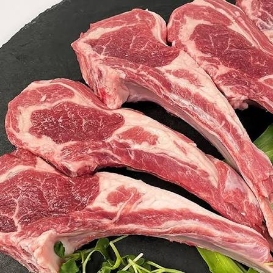
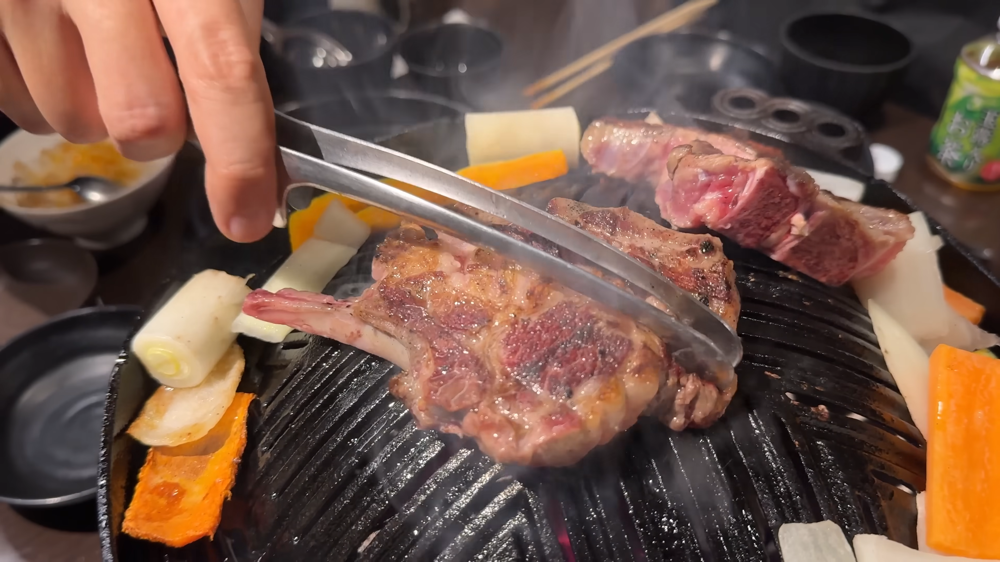

양고기
진짜 잘하는집 가면 존나 맛있는데
그런 집 찾기가 존나 힘들어서 평소에 양고기 맛집 아는 사람이 알려주는거 아닌이상 입문하기가 힘듬
삿포로 가서 먹으면 잡내 없이 개맛있게 먹을수있다
???: 근데 싼 고기도 아니고 그가격이면 차라리 소고기나 삼겹살 먹는게 좋지않나요


양고기
진짜 잘하는집 가면 존나 맛있는데
그런 집 찾기가 존나 힘들어서 평소에 양고기 맛집 아는 사람이 알려주는거 아닌이상 입문하기가 힘듬
삿포로 가서 먹으면 잡내 없이 개맛있게 먹을수있다
???: 근데 싼 고기도 아니고 그가격이면 차라리 소고기나 삼겹살 먹는게 좋지않나요
한국인들 많이 가는곳엔 다 이유가있음
일단 가봐
ㅇㅎ 다음여행때 가봐야겠다
양꼬치는 간판 중국어로 되어있고 안에 중국인들 득실득실하고 연기 자욱하고 시끄러워서 이야기도 못나누는 곳 가면 됨
이분 맛잘알
난 다른 음식들 냄새에는 민감한데 이상하게 양고기 잡내는 안거슬리더라
가성비/접근성만 아니었으면 제일 자주 먹었을듯
진심 소고기보다 맛있음 진짜임
요즘 양갈비는 냄새 안나게 잘하는데 많을텐데?
캠핑갈 때마다 시즈닝 듬뿍 해서 한두시간 방치했다가 숯불에 구움.
숯은 비장탄이나 백탄처럼 화력 균일하게 강하고 오래가는 거로 쓰고
익히다보면 겉에 시즈닝이 검게 타는데 대충 털면 깔끔하게 고기랑 분리됨.
어느정도 익었다 싶으면 제일 두꺼운 부분 가위로 한 번 잘라주고
그 부분 위주로 조금 더 익힌담에 시어링 몇 분 해주고 민트젤리나 씨겨자 찍어먹으면
진짜 천상의 맛이다.
지금까지 캠핑가서 몇십 명 먹여봤는데 다들 극찬함.
나랑 캠핑안갈래?
형아 캠핑가자
양고기 냄새 심하다는데 나는 모르겠음. 그게 맛인데..
몽골에서 먹었을때가 냄새 제일 심한거였는데 그때도 맛있게 먹음
별미라는 특별함땜에 사람들 미화된듯
자주 먹기엔 질기고 냄새나서 쒯이고 램도 질김이 있는데다 냄새는 덜 하지만 육향이 그닥이었음. 애초에 꼬치로 표면 바싹 익히고 향 가장 쎈 편인 향신료 뿌려 먹는게 이건 거의 뭐 독초를 어린 잎만 선별해서 독소 없애가면서 조리해 먹는 억지집념에 가까움
건대에서 양꼬치로 입문해서 양갈비까지 도전해봤는데 양갈비는 확실히 냄시가 좀 나더라
입문하려면 양꼬치부터하는게 시작하는게 좋은거같음
잘 구워진 양갈비에 민트젤리 듬뿍 찍어서 먹으면 천국
그 특유의 양고기 냄새 때문에 먹는데 그게 이상한가 소도 소고기 특유의 향이 있고
그냥 그 고기냄샌데 우선 다 잡내라고 하는
난 유독 양고기 잡내가 너무 강렬하게 느껴져서 첫입은 맛있는데 이후에 올라오는 미친 잡내때문에 토할거같아서 못먹음..
적당히 양 꾸린내가 나야 맛이나는 양고기여
삿포로 고오오급 양고기집 갔다가 실망함
저렴이가 아니면 돼지고기 못이긴다
징기스같은 양고기집 가면 냄새 하나도 안나지않나
가격이 문제지
발리 신혼여행가서 양갈비 신나게먹음
나도 국내에서 못먹다가 삿포로 가서 입문함
그 이후로 국내에서도 맛있는데 위주로 찾아가니까 괜찮더라고
양고기 대여섯번 먹어본 것 같은데 한번도 냄새 자체를 느껴본 적이 없는데
뭐래 양꼬치 집만가도 양고기 실컷 먹는구만
징기스칸 메뉴 하는 곳 찾아가서 입문하거나 호텔뷔페 양갈비 그릴파트에 나오는 곳 있음
나는 국내 프랜차이즈 라무진에서 처음먹어봤는데 진짜 맛있게 먹었어서 가끔 양고기먹고싶으면 걍 라무진으로 감
일본가서 징기즈칸?거먹엇는데 맛잇엇고 한국도 양꼬치집가면 갈비살 썰어논 꼬치도 먹을만함
마크니로 만들거나 라구로 만들면 맛있지
라무진정도만 가도 실패없지
첫 입문 양고기가 이가네 여서 양고기집은 다 맛있는줄 알았음ㅋㅋ
이가네 정도면 상위권
냄새가 너무 안나면 재미가 없고
너무심하면 역한데
그 사이 지점을 맞추는걸 찾는건 좀 어려움ㅋㅋ 요즘 냄새 너무안나는데들이 많아서
나는 정육점에서 프렌치랙만 팔고있는데
딱 돼지 소 중간포지션임 가격도 맛도
판매량은 처참함 구색용됨..
팔아 주고 싶네, 요즘 마트도 영 시원차너
양고기 못 먹는 사람들아
처음만 잘 넘기면 그때부터 먹을 수 있게된다
처음만 잘 넘겨봐..
사실 집에서 직접 숙성 시키면 의외로 잡내 잘 잡힘
그래도 내가 안 해먹는 이유는 구울때 냄새 때문에 집 ㅈ되버리기 때문임
냄새나서 싫다는 사람도있던데 우리가족은 돼지라 냄새고뭐고 걍 먹음 한번가면 20만원 이상 나오는것같다 부담되서 자주 못감
근데 그 냄새 안 날 거면 왜 먹지
양고기도 오이같이 특유의 냄새 싫어하는사람이 있는듯
쯔란이 사기야ㄹㅇ
쿠팡에서 양 꽃갈비살 구워서 거기다가 삼양라면 가지고 라죽해먹으면 개맛있음
양죽이들 아주 다 튀어나왔구먼
그냥 이가네가라
중국에서 양고기 맛없는거 먹어 본적 없는듯
양꼬치는 심양 존나 맛잇음 ㅅㄱ
프랜치렉 시켜먹으면 아주 디져잉
코스트코에서 사다가 겉면 구워서 잘라먹고 겉면 구워서 잘라먹고 가면 극락인데ㅐㅇ
잡내가 좀 있어야 맛있는건데.. 너무 냄새가 안나.
개인적으로 양고기 먹으러 가는곳은 딱 한곳임
일본 징기스칸인가 체인점 양고기 괜찮음? 한번도 안먹어봐서 무서워서 못들어감..